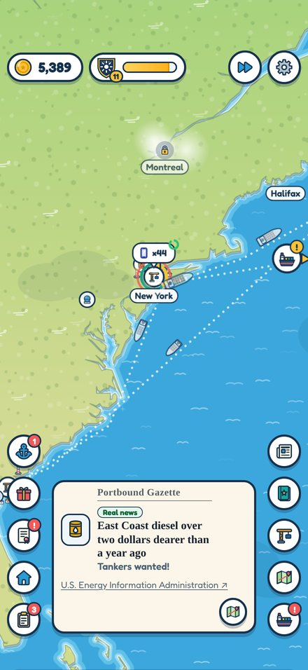
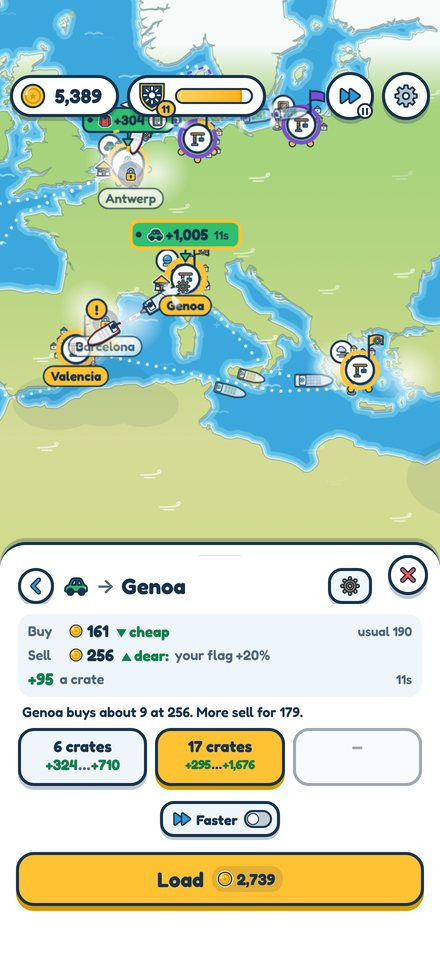
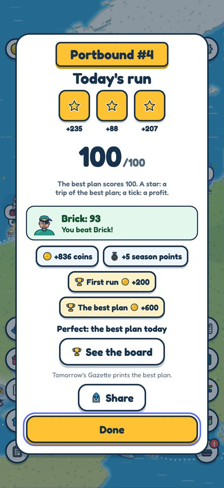
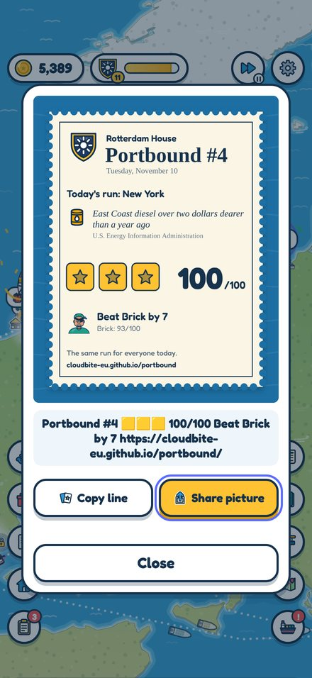
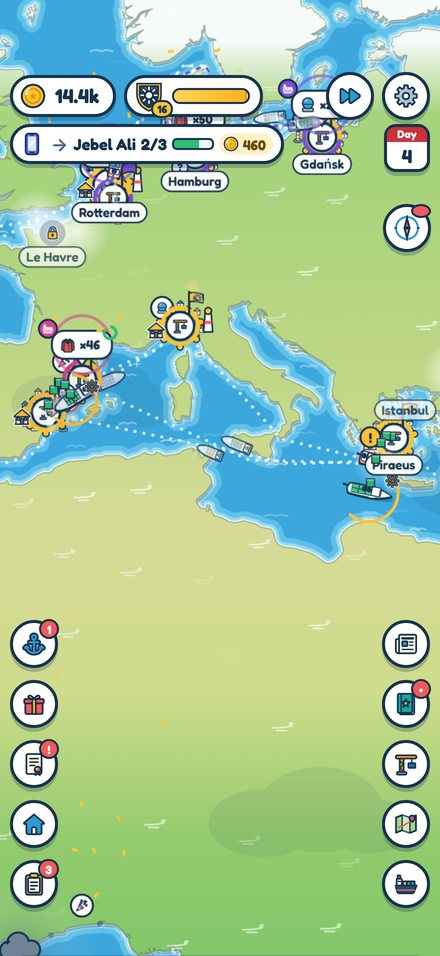

Press kit
Portbound is a free iPhone trading game where today's real news moves today's prices.
Every morning the game gets a few facts from public sources (weather services, port authorities, energy and food agencies), each in the game's own words with its source named, and sets one run where the lead story is. Every player in the world gets the same run: one ship, 1,000 play coins, three trips. Each choice shows exactly what it earns before the ship sails. The score is out of 100 against the best plan of the day, a rival captain plays the same run, and the next day's paper prints the plan that scored 100. Between runs the world stays open: a trading house to grow across 60 real ports in 12 regions, with coffee, phones, coats, cars, fuel, grain, chips and LNG.
Facts
- Name
- Portbound: Ships & Trade
- Developer
- Lukasz Abramowicz, Poland
- Platform
- iPhone, iOS 16.2 or later
- Price
- Free. No ads, no in-app purchases, no account.
- Release
- To be announced
- Language
- English
- A run
- About three minutes, once a day
- Uses
- Game Center (leaderboards, achievements, a challenge), a widget, Live Activities, iCloud saves
- Contact
- hello@cloudbite.eu
Screenshots
From the game as it runs, 1320 x 2868. Tap one for the full size.










App preview
886 x 1920, H.264, with the game's own music.
Files
- The icon (1024 x 1024 PNG)
- The app preview (MP4)
- The screenshots: tap each one above for the full size

How the news works
The day's facts are a small public file, the same for every player and every build of the game. No people, no companies, and no tragedy turned into a deal: a disaster can close a port, never pay. The prices and the companies in the game are invented; the ports and the news are real.